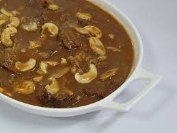

Filé ao molho madeira
Autor: Silvia Martins

Tempo de Preparação: 30 minutos
Rendimento: 6 porções
Informação Nutricional:
400 kcal,
30 g
Ingredientes:
-
6 bifes de filé mignon
-
1 vidro pequeno de champignon fatiado em lâminas finas
-
4 colheres de sopa de manteiga
-
1 cebola média picadinha
-
2 tabletes de caldo de carne
-
1 xícara de vinho tinto seco
-
1 colher de amido de milho
Modo de Preparo:
Frite os bifes em 2 colheres de manteiga e reserve
Em seguida refogue na manteiga a cebola, o champignon e os tabletes de carne
Acrescente o vinho e deixe ferver por uns 10 minutos
Em seguida dilua o amido de milho em 1/4 xícara de água e acrescente ao molho para engrossar
Junte os bifes, deixe por 5 minutos e apague o fogo
Sirva em seguida.
81 pessoas avaliaram essa receita
...